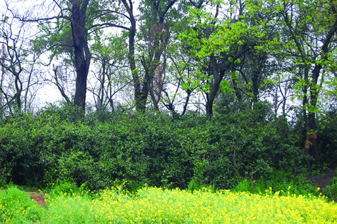

嘉兴市文物保护网 · 市级文物保护单位 · 2014-06-13 · 原文

章氏茶园位于嘉兴市秀洲区塘汇街道茶香坊社区（原茶园村），西南两侧临河，面积呈长方形，占地约1300平方米，茶地高出地面约1.3米。据章氏后人讲述，该茶园距今已有303年，清初期就有，其父亲章氏曾是教书先生，从浙江上八府某地运山地茶树在颜马浜以西一块高地上培育两年，移栽成功。后每年一直采制出售，以“家园茗茶”为牌记，成为嘉兴一项特产。清宣统二年（1910年）清政府在南京举行南洋劝业会，章园茶叶送展，获金牌奖。解放前后产量增至百斤左右，1963年由章家转为集体所有管理，仍以“章园茗茶”著称。2008年，以28万元价格卖给塘汇街道。嘉兴属平原地区，种植茶树极为少见，章氏茶园保存时间较长，所产茶叶在江、浙、沪地区有一定的影响，具有较高的历史研究价值。2009年公布为嘉兴市级文物保护单位。